Proyecto para el curso de Modelos Lineales de la Licenciatura en Estadística
Introducción
En el presente trabajo se analizará un conjunto de datos económicos, correspondientes a 159 empresas. Para cada ejemplar se registraron medidas como ventas en distintos trimestres, costes, margen, ingresos, tipo de empresa. Estas mediciones conforman un total de siete variables.
El objetivo principal del análisis es explicar y predecir los ingresos de la empresa en función de sus ventas, mediante la construcción de un modelo de regresión lineal. Para ello, se convertirá la variable "Ingresos" a formato numérico y se aplicará un enfoque sistemático que incluirá análisis exploratorio, selección de variables, evaluación del ajuste del modelo, diagnóstico de supuestos y valoración del rendimiento predictivo.
Este estudio busca responder preguntas relevantes como:
- ¿Existe una relación significativa entre las ventas trimestrales, los costos, el margen y los ingresos?
- ¿Cuáles son las variables que mejor predicen los ingresos de una empresa?
- ¿Estas relaciones se mantienen constantes entre diferentes empresas?
Con ello, se plantean las siguientes hipótesis:
Hipótesis 1)
- Ho) No existe relación lineal significativa entre las características de la empresa y sus ingresos.
- H1) Al menos una dimensión se relaciona significativamente con el ingreso
Hipótesis 2)
- Ho) Todas las características tienen coeficientes iguales a cero en el modelo.
- H1) Al menos una variable predictora tiene un efecto distinto de cero.
Hipótesis 3)
- Ho) Las características de la empresa afectan al ingreso de igual forma en todos los tipos de empresas.
- H1) El efecto de las características sobre el ingreso varía según el tipo de empresa.
Finalmente, se busca obtener un modelo de regresión lineal significativo y útil para la predicción del ingreso, identificar las variables más influyentes, y presentar los hallazgos mediante visualizaciones e interpretaciones claras y fundamentadas.
Finalmente, se busca obtener un modelo de regresión lineal significativo y útil para la predicción del ingreso, identificar las variables más influyentes, y presentar los hallazgos mediante visualizaciones e interpretaciones claras y fundamentadas.
Datos
El conjunto de datos analizado consta de 159 observaciones. Cada registro incluye siete variables, de las cuales seis son numéricas y una categórica. La variable Segmento identifica el tipo de empresa al que pertenece cada observación y corresponde. La variable Ingresos es la de interés y es cuantitativa.
Las variables Ventas_Q1, Ventas_Q2 y Ventas_Q3 recogen tres mediciones trimestrales, mientras que Costes y Margen son representan los gastos de la empresa y el rendimiento de la empresa a través del margen. En conjunto, estas variables permiten analizar la relación entre las características de la empresa y el nivel de ingresos, constituyendo la base del análisis estadístico desarrollado en este trabajo.
En la Tabla 1 se presentan los nombres, tipos y descripciones de las variables incluidas en la base de datos.

Metodología
El análisis se estructura en distintas etapas que permiten abordar de manera rigurosa la construcción y validación de un modelo de regresión lineal múltiple para explicar y predecir el peso de los peces a partir de sus dimensiones biométricas.
-
Análisis exploratorio y preparación de los datos
Se realizó una descripción inicial de las variables, incluyendo la conversión de la variable Ingresos al tipo numérico. Se revisó la presencia de valores faltantes, se exploraron las distribuciones de cada variable y se analizaron relaciones bivariadas entre las dimensiones y el peso mediante gráficos de dispersión y medidas de correlación.
-
Especificación del modelo de regresión lineal múltiple
Se consideró inicialmente el siguiente modelo general:
-
Inferencia sobre parámetros y significancia de variables
Se interpretaron los coeficientes β, evaluando su significancia individual mediante pruebas t, y la del modelo completo mediante pruebas F. Se utilizó el resumen del modelo (summary()) y otras funciones complementarias para este análisis. Se detectó multicolinealidad en el modelo a través del VIF y se tomaron las medidas correspondientes.
-
Evaluación de supuestos del modelo clásico de regresión
Se verificaron los supuestos fundamentales del modelo de regresión lineal:
- Linealidad: mediante gráficos de residuos vs. valores predichos y residuos parciales.
- Independencia de las observaciones: asumida por diseño del estudio.
- Homoscedasticidad: evaluada con gráficos y el test de Breusch-Pagan.
- Normalidad de los residuos: evaluada con gráficos QQ-plot y pruebas estadísticas.
-
Diagnóstico de observaciones influyentes y outliers
Se detectaron posibles observaciones atípicas o influyentes mediante:
- Residuos studentizados.
- Distancia de Cook.
- Evaluación de la influencia de estos valores atípicos.
-
Evaluación del desempeño predictivo del modelo
Finalmente, se evaluó la capacidad predictiva del modelo utilizando métricas adicionales (como el RMSE) y validación cruzada, evitando confiar únicamente en el R2.
Análisis exploratorio y preparación de los datos:
Para comenzar el análisis, se realizó una etapa de limpieza y transformación de los datos, orientada a garantizar la correcta interpretación de las variables y el cumplimiento de los supuestos del modelo lineal.
En primer lugar, se corrigió el tipo de dato de dos variables fundamentales. La variable Ingresos, que representa el peso del pez en gramos, se encontraba almacenada como texto (character). Dado que será la variable dependiente en el modelo de regresión, es indispensable que sea cuantitativa. Por ello, se convirtió a numérica. La variable Segmento representa una categoría nominal, por lo que se transformó a un objeto de clase factor, permitiendo su correcta inclusión como variable cualitativa en el modelo.
Se analizó la distribución de los Ingresos según el Segmento mediante un gráfico de caja (boxplot). Este análisis permitió observar diferencias sustanciales entre los distintos segmentos. Por ejemplo, el segmento Pública presenta niveles de ingresos generalmente bajos, mientras que el segmento Multinacional tiende a registrar valores más elevados. Asimismo, algunos segmentos como PYME y Premium muestran una mayor dispersión de los ingresos, reflejando una mayor variabilidad intra-segmento, en contraste con otros como Start-up o Particular, cuyas distribuciones resultan más concentradas.
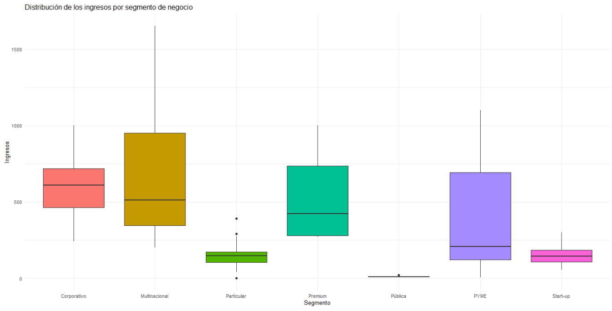
Esta visualización se complementó con un gráfico de puntos individuales (Figura 3), el cual permitió identificar la presencia de observaciones con valores de Ingresos sospechosamente cercanos a cero, así como un caso con ingresos exactamente iguales a cero dentro del segmento Particular. Dado que un valor nulo de ingresos resulta conceptualmente inconsistente en este contexto, se consideró que dichas observaciones corresponden probablemente a errores de registro. En consecuencia, se procedió a filtrar la base de datos, eliminando todos los casos con Ingresos menores o iguales a cero.
Asimismo, el gráfico de la Figura 3 pone de manifiesto diferencias notables en la dispersión de los ingresos entre segmentos. Mientras que en segmentos como Premium o Multinacional los puntos aparecen ampliamente dispersos, en otros como Pública y Start-up se observa una mayor concentración de valores. Este patrón sugiere la posible presencia de heteroscedasticidad, ya que la variabilidad de los ingresos parece diferir entre los distintos segmentos.
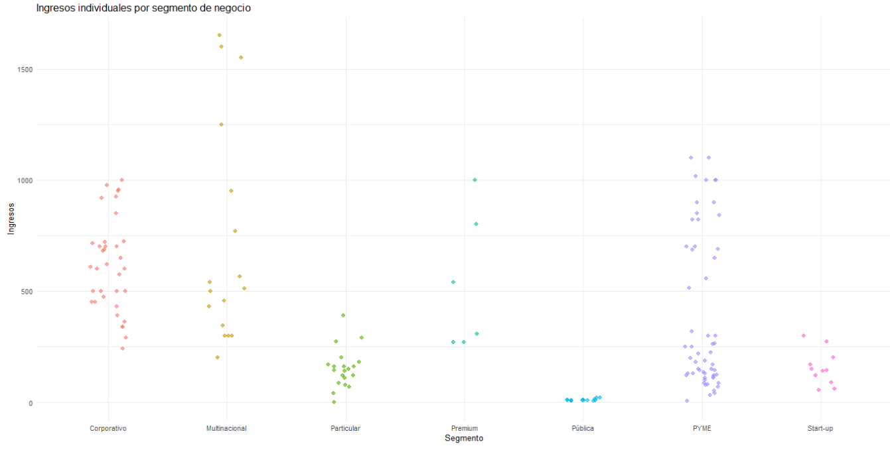
Modelado
Antes de ajustar el modelo de regresión lineal, se analizaron las correlaciones entre las variables numéricas del conjunto de datos. A partir de la matriz de correlación, se observó que las tres variables de ventas (Ventas_Q1, Ventas_Q2 y Ventas_Q3) presentan una correlación extremadamente alta entre sí, con coeficientes cercanos a 1.
Con el objetivo de evitar problemas de multicolinealidad en el modelo de regresión, se optó por conservar únicamente Ventas_Q1 como variable representativa de este conjunto de variables altamente redundantes, excluyendo las restantes del análisis posterior.
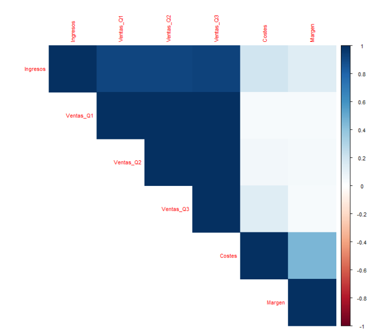
A continuación, se ajustó un modelo de regresión lineal múltiple tomando como variables predictoras Ventas_Q1, Costes, Margen y Segmento. Los resultados del modelo indican que las variables Costes y Margen no presentan significancia estadística individual, lo que sugiere que su exclusión podría mejorar la parsimonia del modelo sin comprometer sustancialmente su capacidad explicativa.
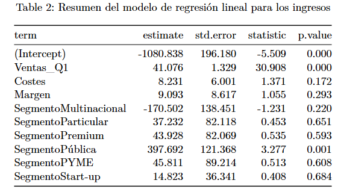
Se evaluó además el factor de inflación de la varianza (VIF) para identificar posibles problemas de colinealidad. El VIF de Costes resultó mayor a 5, lo que refuerza la decisión de eliminarla del modelo. A continuación, se ajustó un nuevo modelo excluyendo esta variable, y se volvió a examinar la significancia de Margen, que seguía presentando un p-valor superior a 0.05. Por esta razón, también se eliminó Margen, obteniendo un modelo más simple que incluye únicamente Ventas_Q1 y Segmento como predictores. El VIF (Variance Inflation Factor) es una medida utilizada en modelos lineales para detectar colinealidad entre las variables explicativas. Su interpretación es la siguiente:
- VIF = 1 → no hay colinealidad
- 1 < VIF < 5 → colinealidad moderada
VIF > 5 → colinealidad alta.
En modelos lineales, se recomienda eliminar variables con VIF > 5 para mejorar la estabilidad de los coeficientes estimadosLa evaluación del modelo reducido muestra que Ventas_Q1 es altamente significativa, con un impacto claro sobre los ingresos. En cuanto a la variable Segmento, algunos coeficientes asociados a sus niveles presentan p-valores más altos, por lo que se complementó el análisis con un test ANOVA para evaluar la significancia conjunta de esta variable categórica.
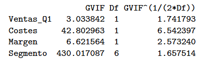
El análisis de varianza (ANOVA) realizado sobre el modelo final permitió concluir que tanto Ventas_Q1 como Segmento son significativos para explicar los ingresos. El efecto de Ventas_Q1 es especialmente fuerte (F = 1203.165, p < 2.2e-16), mientras que Segmento también resulta significativo (F = 32.559, p < 2.2e-16), aunque su impacto es relativamente menor.
En la tabla, el p-valor aparece como 0 debido a que, al ser extremadamente pequeño, R no lo representa con mayor precisión.
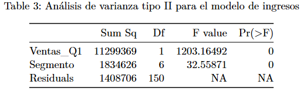

Se realizó un análisis post-hoc utilizando el test de comparaciones múltiples de Tukey para comparar las medias de Ingresos entre segmentos. Los resultados se resumen mediante letras asignadas a cada segmento, donde segmentos que comparten al menos una letra no presentan diferencias significativas en sus ingresos promedio.
Por ejemplo, los segmentos Corporativo y Multinacional comparten la letra "a", por lo que no difieren significativamente en sus ingresos medios. Start-up y Particular comparten las letras "b" y "c", y tampoco se diferencian entre sí. En cambio, PYME, que sólo tiene la letra "c", forma un grupo distinto al de Corporativo y Multinacional, pero se solapa parcialmente con Start-up y Particular. El segmento Pública, identificado únicamente con la letra "b", se diferencia de PYME y de los segmentos del grupo "a", pero no de Start-up y Particular. Finalmente, Premium, que tiene las letras "a" y "c", se solapa parcialmente con Corporativo, Multinacional, Start-up y PYME.
Este análisis permite visualizar cómo se agrupan los segmentos en función de los ingresos y respalda el uso de la variable Segmento como factor explicativo dentro del modelo.
Etapa de Diagnóstico
Homoscedasticidad
Tras ajustar el modelo final con Ventas_Q1 y Segmento como variables predictoras, se procedió a diagnosticar el cumplimiento de los supuestos fundamentales de la regresión lineal múltiple, prestando especial atención a la homoscedasticidad y a la normalidad de los residuos.
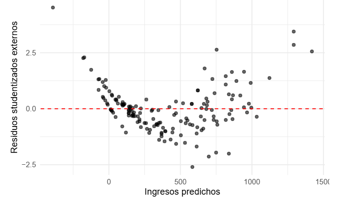
En primer lugar, se extrajeron los residuos del modelo (residuos, residuos estandarizados y residuos studentizados) y se construyó un gráfico de residuos studentizados externos frente a los valores predichos. Este gráfico permitió identificar una cierta tendencia en la dispersión de los puntos, lo que podría indicar la presencia de problemas de heteroscedasticidad en el modelo
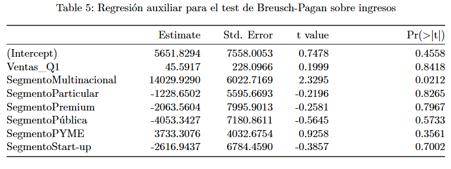
Para evaluar formalmente la homoscedasticidad, se aplicó el test de Breusch-Pagan, que contrasta la hipótesis nula de varianza constante frente a la alternativa de varianza no constante. En el modelo original, el estadístico BP tuvo un valor de 12.72 con un p-valor de aproximada-mente 0.079. Dado que este valor está ligeramente por encima del umbral común de 0.05, no se rechaza la hipótesis de homoscedasticidad, aunque el resultado es dudoso y cercano a la región de rechazo, lo que motiva explorar posibles transformaciones. Ante esta evidencia, se decidió aplicar una transformación logarítmica tanto a la variable dependiente (Ingresos) como a la variable predictora Ventas_Q1, con el objetivo de estabilizar la varianza y mejorar la linealidad del modelo. Se ajustó entonces un nuevo modelo lineal con log(Ingresos) como variable dependiente y log(Ventas_Q1) junto con Segmento como variables explicativas
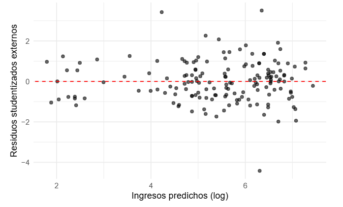
El análisis de residuos sobre este modelo transformado muestra una clara mejora en la dispersión de los residuos, y el test de Breusch-Pagan resultó en un p-valor de 0.91. Esto indica que, tras la transformación logarítmica, no existe evidencia de heteroscedasticidad, confirmando que la varianza de los errores puede considerarse constante.
Nuevo Modelo
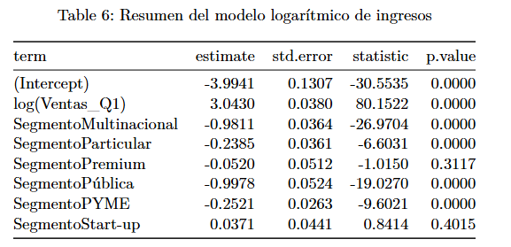
Además, el modelo logarítmico presenta significancia estadística para todos los coeficientes, con excepción de los correspondientes a Segmento Startup y Segmento Premium, que mostraron p-valores superiores a 0.05. Aun así, el ajuste general del modelo es adecuado y permite explicar la relación entre los Ingresos y las dimensiones representadas por Ventas_Q1, con mayor estabilidad que el modelo sin transformar.
Para una mejor comprensión del modelo ajustado, es importante interpretar los coeficientes estimados. Dado que se trata de un modelo logarítmico en ambas variables numéricas, la interpretación es proporcional.
El intercepto estimado es aproximadamente -3.99. Este valor representa el logaritmo de los ingresos esperados para el segmento de referencia, que en este modelo es Corporativo, cuando la longitud es de 1 unidad. Aunque este valor no tiene una interpretación práctica directa, es necesario para definir la función del modelo.
El coeficiente de la variable log(Ventas_Q1) es 3.04. Esto implica que, manteniendo constante el segmento, un aumento del 1 % en la longitud se asocia con un aumento aproximado del 3.04 % en los ingresos. Este tipo de interpretación es común en modelos log-log y representa una elasticidad.
Los coeficientes asociados a los diferentes Segmentos indican cuánto varían los ingresos promedio respecto al segmento de referencia (Corporativo), considerando la misma longitud. Por ejemplo:
El coeficiente de PYME es aproximadamente -0.25, lo que implica que, para una misma longitud, un registro del segmento PYME tiene ingresos cerca de un 25 % menores que los del segmento Corporativo.
El coeficiente de Multinacional es cercano a -0.98, indicando que sus ingresos promedio son aproximadamente un 98 % menores que los del segmento Corporativo de igual longitud.
El segmento Pública tiene un coeficiente similar, con ingresos alrededor de un 99 % menores.
Por otro lado, los coeficientes de Start-up y Premium no resultaron estadísticamente significativos, lo que sugiere que no hay diferencias claras respecto a Corporativo al controlar por la longitud.
Estas interpretaciones permiten entender no solo la influencia de la longitud sobre los ingresos, sino también cómo varía esta relación según el segmento. En conjunto, el modelo ofrece un ajuste adecuado y coherente con el comportamiento esperado de las variables analizadas.
Letras para el nuevo modelo
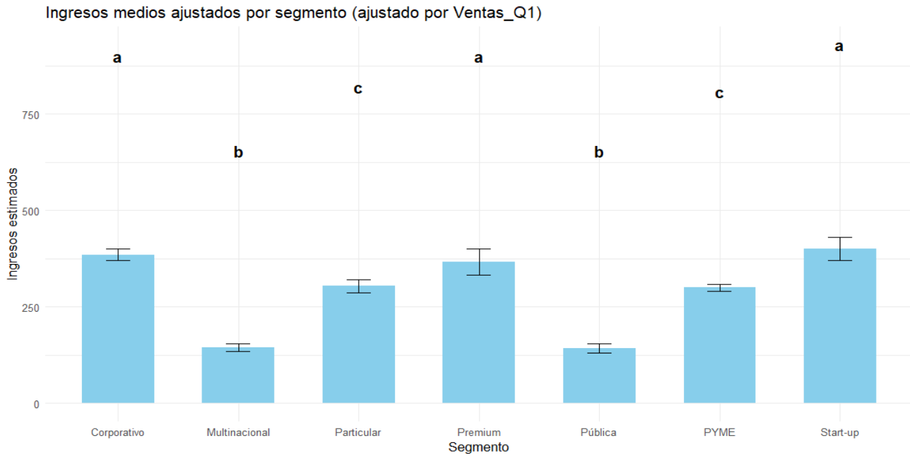
Una vez obtenido el nuevo modelo, se procedió a rehacer la clasificación por letras. Se observa que, a diferencia del análisis anterior, ningún segmento contiene más de una letra; cada uno está claramente definido dentro de su grupo correspondiente.
Dado que el modelo ajusta por Ventas_Q1, el método de las letras clasifica cada segmento suponiendo que todos tienen la misma longitud promedio. Por ello, se elaboró un gráfico de barras que representa los Ingresos promedio esperados, considerando que todos los registros del conjunto de datos tienen la misma longitud promedio. Esta visualización permite comparar de manera directa los segmentos ajustados por longitud, mostrando de forma clara las diferencias relativas entre ellos.
Calculo del \(R^2\)
Se partió del modelo de regresión lineal logarítmico, en el que tanto la variable dependiente (Ingresos) como la variable explicativa (Ventas_Q1) fueron transformadas mediante logaritmo. Al obtener el summary() del modelo, se registró un $R^2$. de 0.9927, un valor muy alto que está sesgado por el uso de la transformación logarítmica y que no es directamente interpretable ni comparable con el $R^2$ del modelo ajustado en la escala original (Ingresos).
Esto ocurre porque el $R^2$ del modelo logarítmico mide la proporción de varianza explicada en la escala logarítmica, no en la escala real de la variable dependiente. Al aplicar la función exponencial a las predicciones del modelo logarítmico para volver a la escala original, el error deja de ser aditivo y se convierte en multiplicativo, lo que modifica la forma en que se mide la varianza explicada.
Por este motivo, si se desea evaluar la capacidad predictiva del modelo en la escala original, es necesario calcular un $R^2$ alternativo, comparando los valores observados de Ingresos con las predicciones retransformadas (exp(predicciones logarítmicas))
Esta versión del $R^2$ refleja la calidad del ajuste en la escala original. En nuestro caso, este $R^2$ alternativo resultó ser 0.9728, indicando un ajuste muy bueno del modelo a los datos originales.
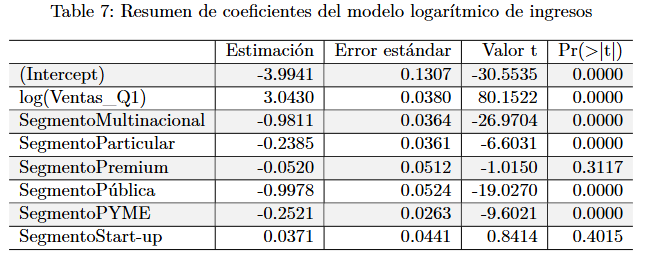
Normalidad de los residuos
Para evaluar el cumplimiento del supuesto de normalidad de los errores en el modelo transformado (modelo 3), se construyó un gráfico Q-Q plot a partir de los residuos studentizados externos. En dicho gráfico se observa que los puntos se alinean bastante bien con la línea de referencia, lo que visualmente sugiere un comportamiento cercano a la normalidad. Solo se detectan pequeñas desviaciones en los extremos, lo cual es común y no necesariamente preocupante.
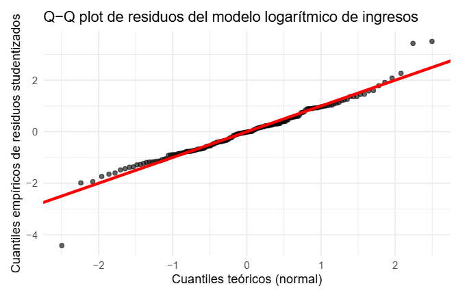
También hicimos un gráfico para comparar la distribución de los residuos contra la distribución de una normal estándar. Donde vemos que los residuos se aproximan a una normal.
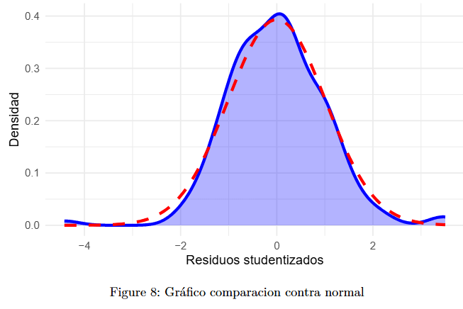
Resaltamos esto porque al hacer los test estadísticos de Kolmogorov-Smirnov, Shapiro-Wilk, y Jarque-Bera, para dos de ellos obtuvimos p valores menores a 0.05 para los últimos dos, rechazando la normalidad
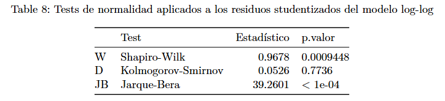
El test de Shapiro-Wilk arrojó un valor W = 0.96776 con un p-valor = 0.0009448, lo que indica que se rechaza la hipótesis nula de normalidad al nivel de significancia del 5%. No obstante, este test suele ser muy sensible a leves desviaciones cuando el tamaño muestral es relativamente grande, como en este caso. Por otro lado, el test de Kolmogorov-Smirnov reportó un estadístico D = 0.05098 con un p-valor = 0.7736 lo que implica que no se rechaza la hipótesis de que los residuos provienen de una distribución normal. El test de Jarque-Bera, que evalúa conjuntamente la simetría y la curtosis de los residuos, arrojó un estadístico JB = 39.26 con un p-valor menor a 0.0001. Esto también sugiere que los residuos no siguen una distribución normal perfecta. Al igual que el test de Shapiro-Wilk, es sensible a pequeñas desviaciones de la normalidad, especialmente cuando la muestra es amplia. Existe cierta inconsistencia entre los resultados: mientras que los tests de Shapiro-Wilk y Jarque-Bera indican una desviación significativa de la normalidad, el test de Kolmogorov-Smirnov no detecta diferencias respecto a la distribución normal. Esto es común en muestras moderadas o grandes, donde pequeños desvíos generan significancia estadística sin implicar una gran desviación visual.
Consideramos la posibilidad de quitar atípicos para lograr que los residuos del modelo distribuyeran normal, pero tuvimos un problema que fue que detectamos que todos los atípicos eran influyentes, y decidimos seguir la recomendación de las notas del curso de no eliminar atípicos con el fin de cumplir supuestos, y menos si esos supuestos no son tan importantes como la normalidad. Además tenemos 158 observaciones, por lo que podemos considerar que por el TCL, tenemos un comportamiento normal.
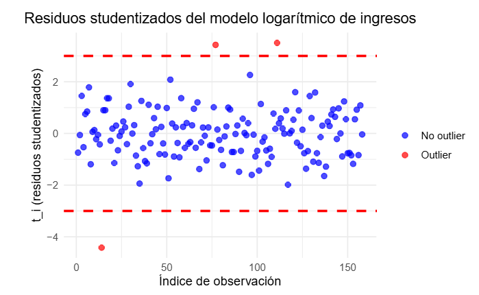
Este gráfico tiene en el eje X el índice de observación y en el eje Y los residuos studentizados (t_i). Se usa para detectar observaciones atípicas (outliers). Los residuos studentizados sirven para comparar residuos entre sí, sin importar la escala. Si un residuo studentizado es alto o bajo, indica que esa observación puede ser atípica, estas son las observaciones que se encuentran por encima o por debajo de ±3.
Este gráfico también tiene el índice de observación en el eje X, y en el eje Y muestra la distancia de Cook de cada observación. Se dibujan barras verticales para cada observación, representando su influencia. La línea roja en 4/n es un umbral, el cual si es superado indica que esa observación es potencialmente influyente.
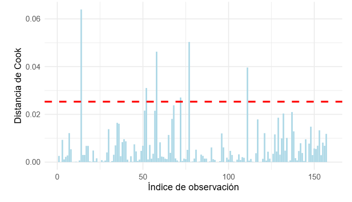
Linealidad
Uno de los supuestos fundamentales del modelo lineal es que exista una relación lineal entre la variable dependiente y las variables independientes. Para evaluar este supuesto, se construyó un gráfico de residuos en función de los valores predichos. En este gráfico, los residuos deberían dispersarse aleatoriamente alrededor de cero, sin formar patrones sistemáticos.
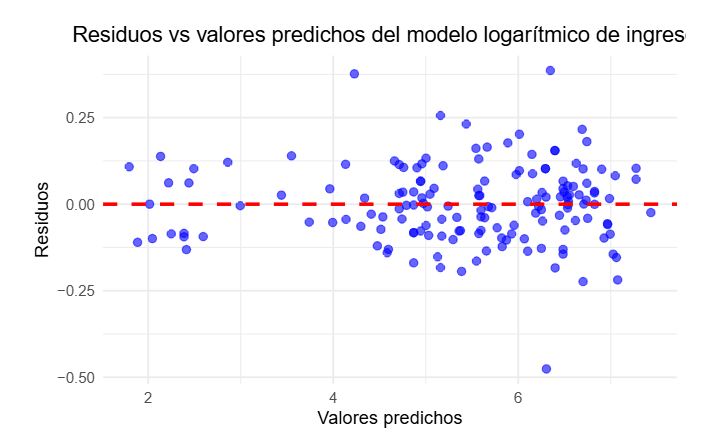
En el modelo log-transformado (modelo 3), el gráfico de predichos versus residuos muestra una dispersión razonablemente homogénea, lo cual es una buena señal. Sin embargo, para explorar más detalladamente la relación entre las variables independientes y la variable respuesta, se utilizó la herramienta de gráficos de residuos parciales (`crPlot`).
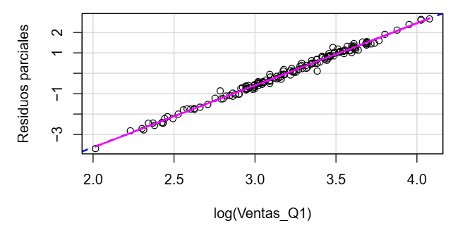
En particular, el gráfico de residuos parciales para log(Ventas_Q1) muestra una tendencia lineal clara, confirmando que esta variable mantiene una relación aproximadamente lineal con la variable dependiente transformada (log(Ingresos)). En contraste, las variables Costes y Margen, que no fueron incluidas en el modelo final por no ser significativas, mostraban patrones menos definidos, lo que refuerza la decisión de haberlas excluido del modelo base.
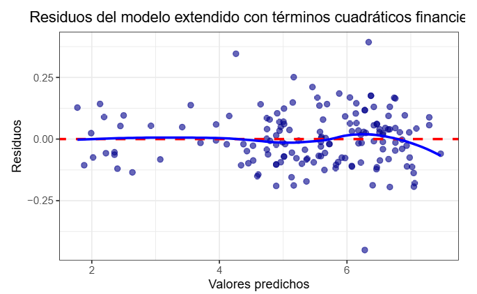
Adicionalmente, se exploró un modelo extendido que incluía términos cuadráticos de Costes y Margen para evaluar la posible presencia de relaciones no lineales. Sin embargo, el ajuste no presentó mejoras sustanciales ni cambios significativos en la dispersión de los residuos (ver Figura 10). Por esta razón, se decidió mantener el modelo log-lineal con log(Ventas_Q1) y Segmento como predictores principales.
Predicción
Se evaluó la capacidad predictiva del modelo dividiendo los datos en un conjunto de entrenamiento (80 % de los datos) y un conjunto de prueba (20 % restante). A partir de esta partición, se calcularon distintas métricas de desempeño para cuantificar la precisión de las predicciones y la capacidad generalizadora del modelo.
RMSE = 42.2358525
MAE = 29.5571571
\(R^2\) = 0.9825771
MAE mide el promedio del valor absoluto de los errores de predicción.
RMSE es la raíz cuadrada del promedio del error cuadrático.
R2 es la proporción de la varianza total explicada por el modelo
Para evaluar el rendimiento predictivo visualmente
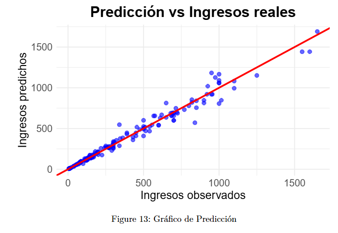
De todas formas solo como posible respuesta a la curiosidad del lector, probamos quitar los outliers y vimos que el supuesto de normalidad se cumplía y que el rendimiento predictivo del modelo era mejor dado que obtuvimos RMSE de 0.0866, MAE de 0.0717 y R\^2 de 0.9937
Resultados
Luego de un análisis exploratorio y diagnóstico detallado, se construyó un modelo de regresión lineal múltiple con transformación logarítmica, donde la variable dependiente es log(Ingresos) y las variables predictoras son log(Ventas_Q1) y Segmento. Esta transformación permitió estabilizar la varianza de los errores y mejorar la linealidad del modelo.
Los resultados del modelo indican que la variable log(Ventas_Q1) tiene un efecto altamente significativo sobre los ingresos. Esto es coherente con lo esperado, ya que la longitud está directamente relacionada con el tamaño y, por ende, con los ingresos asociados. El coeficiente de esta variable es positivo, lo que implica que, a medida que aumenta la longitud, también aumentan los ingresos, de manera proporcional (dado el modelo en escala logarítmica).
En cuanto a la variable categórica Segmento, el análisis muestra que también es significativa en su conjunto, aunque no todos sus niveles lo son individualmente. En particular, algunos segmentos como PYME y Corporativo presentan coeficientes claramente distintos del segmento de referencia (Particular), mientras que otros como Start-up y Premium no mostraron significancia estadística. Esto sugiere que la relación entre longitud e ingresos varía levemente entre segmentos, pero no en todos los casos.
El test de Breusch-Pagan aplicado al modelo transformado confirmó que ya no hay problemas de heteroscedasticidad (p = 0.91), y el gráfico de residuos mostró un patrón aleatorio sin evidencia de varianza no constante. La normalidad de los residuos fue evaluada visualmente mediante un Q-Q plot, y estadísticamente mediante los tests de Shapiro-Wilk (que mostró ligera desviación) y Kolmogorov-Smirnov (que no detectó diferencias significativas). En conjunto, los resultados sugieren que los residuos del modelo son razonablemente normales.
Finalmente, se identificaron algunas observaciones con leve influencia sobre el modelo, pero ninguna que comprometa su validez general. Se concluye que el modelo ajustado es adecuado para describir y predecir los ingresos en función de la longitud y el segmento, dentro del marco de los datos disponibles.
Conclusiones
El objetivo de este trabajo fue modelar y predecir los ingresos a partir de características representadas por la longitud de los registros, utilizando herramientas de regresión lineal múltiple. A lo largo del análisis, se aplicaron técnicas de limpieza y transformación de datos, selección de variables, verificación de supuestos y diagnóstico del modelo.
Se concluyó que la variable más influyente en la predicción de los ingresos es la longitud de los registros, específicamente la medida Ventas_Q1. Además, la inclusión de la variable Segmento permitió capturar diferencias estructurales entre grupos, aunque no todos los segmentos mostraron efectos significativos.
Los supuestos del modelo clásico de regresión fueron cuidadosamente evaluados. Se detectaron indicios de heteroscedasticidad en el modelo original, los cuales fueron corregidos mediante una transformación logarítmica de las variables Ingresos y Ventas_Q1. Posteriormente, se comprobó la estabilidad de la varianza de los errores y una adecuada normalidad de los residuos.
El análisis de observaciones influyentes identificó algunos casos puntuales con mayor impacto en los coeficientes estimados. No obstante, se demostró que el modelo es robusto frente a estas observaciones, ya que los parámetros estimados no varían sustancialmente.
En suma, el modelo final en escala logarítmica se considera adecuado para describir y predecir los ingresos en función de la longitud y el segmento. Ofrece interpretaciones coherentes, cumple con los supuestos básicos del modelo lineal clásico y demuestra buen rendimiento predictivo en el marco de los datos analizados.